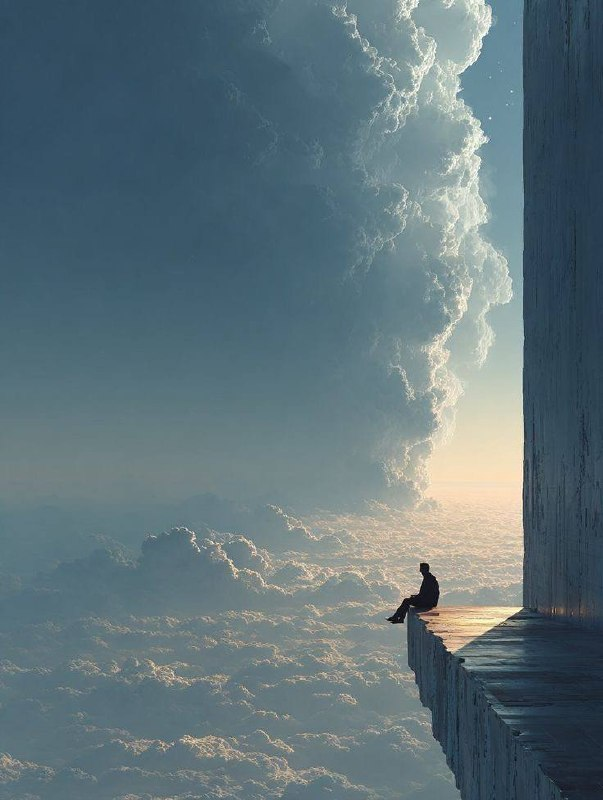

Umr odamning qo‘lidan mahkam tutib ketib bormoqda. Inson yosh boladek unga…

Umr odamning qo‘lidan mahkam tutib ketib bormoqda. Inson yosh boladek unga ergashishga mahkum. Lekin vaziyatni biroz fojiali tasvirlasak, bunday manzara ko‘rinadi – umr inson bo‘yniga zanjir solib sudramoqda.
Balki ko‘tarinki rasm chizsak-chi – inson umrning oldiga tushib o‘ynoqlab yugurib ketmoqda. Yana ham balandga chiqaylik – inson umrni o‘zi yetaklab olgan.
Umr – insonga vaqtning bir bo‘lagidan yulib berilgan parchasi emasmi? Hammaning umri ulkan vaqtdan parcha-parcha qilib kesib olinganmi shunda? Yoki u vaqt daryosidan o‘lchab berilgan suvmi? Hamma uni ichadimi? Hammaning qo‘lida idish – idishga vaqt suvi quyilgan, ichib-ichib tugatamiz.
Bu suvni nima kir qiladi? Adovatmi? Hasadmi? Jaholatmi? Razolatmi? Shunga o‘xshagan hammasi kir qiladi. Shunda biz loyqa suv ichayotgan bo‘lamiz-da!
Insonning tanasi ichida ruhi yashaydi. Tananing biror joyidan kichik teshik ochilsa, ruh o‘sha yerdan chiqib ketishi mumkin. Pufakka qamalgan havo kichik teshikdan tezda chiqib ketgan kabi ruh ham jismdagi kichik teshikdan chiqadi.
Agar shu joy tezda davolanmasa, yamab qo‘yilmasa, ruh ana shu teshik atrofida qiynaladi. Chunki ruhning vujuddan chiqishi juda og‘riqlik kecharkan.
Kim bilandir muloqotga kirishsak, aslida, uning ruhi ila muloqot qilamiz. Kimnidir unuta olmasak, uning ruhini unuta olmaymiz. Jism uzoq ketsa, ruh bu qafasda ketdi, sening qafasdagi ruhing esa o‘zi sevganga yeta olmay pitirlab, qafas panjarasiga o‘zini qush kabi uradi.
Biz ruhimizga umr deb atalagan suvni adovat va hasad, hirs va shahvat bilan kirlab ichirsak, uning ahvoli nima bo‘lishini tasavvur eting. Og‘ir va lohasligimiz, holsiz va tushkunligimiz ruhimizning xastaligidandir.
Biz uni zahar ichirib shu ahvolga soldik. Uni tozalash uchun zikr dorisini ichaylik. Tinimsiz zikr dorisini ichaylik.
Odam ruhini aqli va solih amali ila himoya etmasa, uni shayton zanjirlab oladi, nafs egallaydi. Bir tomondan nafs, bir tomondan shayton zanjir urgan ruh abgor holda ingraydi. Jism nima qilayotganidan bexabar nima qilsa, qilaveradi. Nima desa, deyaveradi.
Bir-birimizga rahm qilmasak, Allohning rahmatida umid qilganimiz behuda. Bir-birimizni kechirmasak, Xudo meni kechiradi deb o‘ylash foydasiz.
Bir-birimizga yordam bermasak, Xudodan yordam kutgan bilan natija bo‘lmaydi.
Xudoni sevaman degan u yaratgan narsalarni sevmasa, sevgidan mahrum qoladi.
Xudo do‘stlarini do‘st tutmagan Xudoning do‘stligini topmaydi.
Rahmat istagan, rahmat ko‘rsatishi, afv istagan afv etishi, yordam xohlagan yordam berishi va sevgi istagan sevishi, do‘stlik orzu qilgan do‘st bo‘la olishi shartdir.
Shunda umr suvi toza bo‘lib, uni ichsak, zaharlanmaymiz.
Vallohu a’lam.
Akrom MALIK